방송통신기능사 (2006-01-22 기출문제)
1과목: 임의 구분
1. i=100√2sin(120πt+π/6)의 교류 전류에서 주기 T[초]는 얼마인가?
- 1/50 [초]
- 1/70 [초]
- 1/60 [초]
- 1/80 [초]
(정답률: 알수없음)

2. 전계 효과 트랜지스터 (FET)를 설명한 내용 중 잘못된 것은?
- 입력 임피던스가 높다.
- MOS형 FET와 접합형 FET가 있다.
- 소수 캐리어(반송자)의 확산에 의한 이동으로 증폭작용을 한다.
- Field Effect Transistor의 머리문자를 따라 FET라고 칭한다.
(정답률: 알수없음)
3. LC 발진 회로에서 L = 200[μH], C = 200[pF]이면 발진 주파수 fo는?
- 400[kHz]
- 455[kHz]
- 600[kHz]
- 800[kHz]
(정답률: 알수없음)
4. 매우 긴 평행한 두 도체가 있다. 이 두 도체 사이의 거리가 r[m]이고 흐르는 전류가 각각 I1[A], I2[A]일 때두 도체사이에 작용하는 힘[N/m]은?
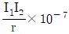
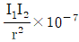
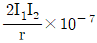
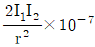
(정답률: 알수없음)
5. R.L.C 직렬 회로에 사인파 교류를 가할 때 (1/ωC)＞ωL일 경우 전압과 전류의 위상 관계는?
- 전압의 위상이 앞선다.
- 전류의 위상이 앞선다.
- 전압과 전류의 위상이 같다.
- 온도에 따라 다르다.
(정답률: 알수없음)
6. 에미터 접지 증폭기 회로에서 hfe의 단위는?
- 없음
- Ω[ohm]
- ℧[mho]
- A[Ampere]
(정답률: 알수없음)
7. 20[Ω]의 저항에 5[V]의 전압을 가하면 몇[mA]의 전류가 흐르는가?
- 0.25[mA]
- 2.5[mA]
- 25[mA]
- 250[mA]
(정답률: 알수없음)
8. P형 반도체에 대한 설명으로 적당한 것은?
- 진성 반도체에 III족 불순물인 In(인듐), B(붕소)등을 가한다.
- 불순물의 최외각 전자가 6개 이며, 정공 1개가 생긴다.
- III족 원소인 불순물인 In(인듐), B(붕소)등을 도우너(donor)라 한다.
- 반송자(carrier)로서는 자유전자가 있다.
(정답률: 알수없음)
9. 전기장의 세기가 E[V/m]인 전기장에 Q[C]의 전하를 놓았을 때, 이에 작용하는 전기력의 세기는 몇 [N]인가?
- E/Q
- Q/E
- QE
- QE2
(정답률: 알수없음)
10. 다음의 발진회로 구성도에서 발진의 성장 과정에 대한 설명중 맞는 것은?
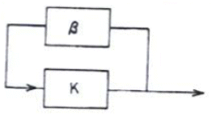
- 궤환회로전달함수의 위상은 -90° 로 한다.
- β⋅K ＜＜ 1로 한다.
- K는 궤환회로 이득이고, β는 주증폭부 이득이다.
- 불안정 상태에서 발진이 시작되어 정상상태에 이르기까지의 과정이다.
(정답률: 알수없음)
11. 그림과 같은 콘덴서의 직렬접속에서 V1에 걸리는 전압은?
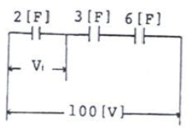
- 50 [V]
- 100/3 [V]
- 50/3 [V]
- 25 [V]
(정답률: 알수없음)
12. TR "2SC316A"의 형명 표기를 바르게 나타낸 것은?
- PNP형의 개량형 저주파용 트랜지스터
- PNP형의 개량형 고주파용 트랜지스터
- NPN형의 개량형 저주파용 트랜지스터
- NPN형의 개량형 고주파용 트랜지스터
(정답률: 알수없음)
13. 진폭변조도가 100%일 때 반송파(Carrier Wave)가 정하는 전력은 피변조파전력의 몇 분의 몇인가?
- 1/2
- 2/3
- 3/4
- 4/5
(정답률: 알수없음)
14. 다음 그림과 같은 r[Ω]의 저항 3개를 삼각형으로 접속하여 60[V]의 전압을 가하니 전전류 I는 3[A]이었다. 저항 r의 값은?
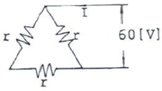
- 10[Ω]
- 20[Ω]
- 30[Ω]
- 40[Ω]
(정답률: 알수없음)
15. 다음중 고주파 교류신호를 저주파 교류신호에 따라 변화시키는 것은?
- 발진
- 변조
- 증폭
- 연산
(정답률: 알수없음)
16. 다음 논리회로의 출력(X)과 같은 것은?
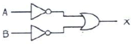
- X =
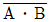
- X =
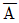
⋅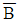
- X = A + B
- X = A ⋅ B
(정답률: 알수없음)
17. 순차적 처리(SEQUENTIAL PROCESSING)만 가능한 것은?
- 자기드럼
- 자기코어
- 자기디스크
- 자기테이프
(정답률: 알수없음)
18. 다음 설명 중 틀린 것은?
- 어큐뮬레이터는 누산기라고도 하며, 연산의 중심이 되는 레지스터로서 연산결과를 일시적으로 보존한다.
- 범용 레지스터는 산술 및 논리 연산, 어드레스의 인덱싱 등 여러 가지 목적으로 사용되는 레지스터이다.
- 플래그 레지스터는 산술 및 논리 연산의 결과로 발생된 carry. overflow. zero 등의 CPU 상태를 나타내는 레지스터이다.
- 프로그램 카운터는 인터럽트가 발생했을 때 복귀 주소를 저장하는 레지스터이다.
(정답률: 알수없음)
19. 2진수의 용수(negat ive number) 를 표현하는 방법이 아닌 것은?
- sign - magnitude 표현
- sign - 2's compliment 표현
- sign - 1's compliment 표현
- sign - Gray 표현
(정답률: 알수없음)
20. 불 대수(Boolean algebra)의 수식으로 올바른 것은?
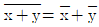
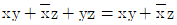
- x(x+y)=y
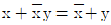
(정답률: 알수없음)
2과목: 임의 구분
21. 플로우 차트의 기호 중 입출력을 나타내는 기호는?
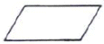
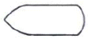
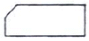
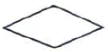
(정답률: 알수없음)
22. 다음 중 Compiler는 어떤 것에 속한다고 할수 있는가?
- 제어(control) 프로그램
- 문제(problem) 프로그램
- 기계(machine) 프로그램
- 처리(processing) 프로그램
(정답률: 알수없음)
23. 컴퓨터에서 CPU의 제어 장치가 하는 역할로 가장 타당한 것은?
- 명령을 꺼내어 해독하고 시스템 전체에 지시 신호를 보낸다.
- 프로그램이나 데이타를 기억한다.
- 산술연산이나 논리연산를 한다.
- 입출력 장치의 성능을 측정하고 계산하는 역할을 한다.
(정답률: 알수없음)
24. 사용자와 컴퓨터 사이에서 중계 역할을 하고 전체적인 시스템의 효율을 극대화 시키는 프로그램의 모임을 의미하는 것은?
- 운영 체제(OS)
- 하드웨어(hardware)
- 파일(file)
- 응용프로그램
(정답률: 알수없음)
25. 세계 최초의 전자식 전자 계산기는?
- IBM
- UNIVAC
- ENIAC
- VAX
(정답률: 알수없음)
26. 송신단의 전력이 10[mW] 수신단의 전력이 0.1[mW] 일 때의 전력감쇄량은 얼마인가?
- 10 [dB]
- 20 [dB]
- 30 [dB]
- 40 [dB]
(정답률: 알수없음)
27. 보호기의 설치 방법으로 적합하지 않은 것은?
- 접지시킨다.
- TV 연결단자에 설치한다.
- 옥외에 설치한다.
- 인입구 부근에 설치한다
(정답률: 알수없음)
28. 우리나라의 지상파 방송에서 사용되고 있는 아날로그 칼러 TV 방식은?
- NTSC
- SECAM
- PAL
- HDTV
(정답률: 알수없음)
29. 다음 중 CATV의 특성이라고 볼 수 없는 것은?
- 서비스의 지역적 특성이 크다.
- 전송품질이 양호하다.
- 전송방식은 단방향이다.
- 채널용량이 증가한다.
(정답률: 알수없음)
30. 다음중 컨버터의 기능과 가장 거리가 먼 것은?
- 직접파의 방해에 의한 겹치기 방지
- TV채널의 다채널화를 목적으로 사용
- 특정프로그램의 요금부가
- 고장시 이상전류의 역류를 방지
(정답률: 알수없음)
31. CATV의 전송선로에는 동축 케이블이 많이 이용되고 있다. 이 동축케이블의 특징으로 적합하지 않은 것은?
- 고주파 누화 특성이 좋다.
- 전송 손실이 적다.
- 도체 저항이 적다.
- 내 전암이 극히 낮다.
(정답률: 알수없음)
32. 화면의 오른쪽의 짧은 꼬리를 끄는 현상은?
- Color Snow
- Smear
- Ghost
- Leading white
(정답률: 알수없음)
33. 내부저항이 600Ω인 전원이 600Ω인 부하에 대하여 1mW의 전력을 공급하는 전기 회로의 전송레벨은 무엇인가 ?
- 최고레벨
- 절대레벨
- 평균레벨
- 최저레벨
(정답률: 알수없음)
34. 일반적으로 헤드엔드(Headenc)에 사용되는 장비로만 바르게 나열된 것은?
- 신호처리기, 변조기 복조기 혼합기
- 변조기, 복조기, 혼합기, 연장증폭기
- 혼합기, 분배증폭기, 분기기(Tap-off), 변조기
- 복조기, 분기기(Tap-off), 신호변환기
(정답률: 알수없음)
35. 다음 중 동축케이블의 특성 임피던스는?
- 75[Ω]
- 200[Ω]
- 300[Ω]
- 600[Ω]
(정답률: 알수없음)
36. 비월주사 방식을 사용하는 우리나라 아날로그 텔레비젼 방식에서 수평주사의 주파수는 몇 [HZ]인가?
- 525
- 625
- 13250
- 15750
(정답률: 알수없음)
37. 스크램블신호를 설명한 것으로 가장 옳게 나타낸 것은?
- 단지 제한된 몇 개의 채널만으로 나타난다.
- 위성으로는 전송될 수 없다.
- 헤드엔드에서만 디스크램블 할 수 있다.
- 승인되지 않은 프로그램의 시청을 방해한다.
(정답률: 알수없음)
38. CATV 방송국 위치로 가장 적당한 곳은?
- 교통이 편리한 전철지역
- 방송국 급전이 용이한 변전소지역
- 가입자가 분포된 대도시지역
- 방송파 수신이 용이한 산간지역
(정답률: 알수없음)
39. 광섬유케이블의 동축케이블에 대한 장정이 아닌 것은?
- 저손실
- 협대역성
- 세심 경량성
- 무유도성
(정답률: 알수없음)
40. 국내 아날로그 TV의 영상 신호에 사용되는 변조 방식은?
- 위상 변조
- 펄스부호 변조
- 진폭 변조
- 주파수 변조
(정답률: 알수없음)
3과목: 임의 구분
41. 다음 중 종합유선방송 시설이 아닌 것은?
- 유선 방송국설비
- 전자교환설비
- 전송 및 선로설비
- 유선방송청취설비
(정답률: 알수없음)
42. 광통신시스템의 기본구성으로 ( )에 적당한 것은?
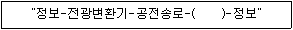
- 광증폭기
- 광전변환기
- 광압신기
- 광체배기
(정답률: 알수없음)
43. 다음 중 전송선로의 1차 정수가 아닌 것은?
- 저항
- 인덕턴스
- 정전용량
- 위상정수
(정답률: 알수없음)
44. 영상 신호의 해상도 저하 및 잡음 발생 등을 방지하려 측정하는 항목으로 가장 적합한 것은?
- 영상 반송파의 신호 레벨 측정
- 영상 반송파와 음성 반송파간의 간격 측정
- 영상 반송파의 주파수 편차 측정
- 영상 신호의 주파수 대역 측정
(정답률: 알수없음)
45. 수신자 댁내설비인 분배기와 관련이 없는 사항은?
- 신호전력을 균등하게 분배하기 위한 기기이다.
- 신호전력을 불균등하게 분배하기 위한 기기이다
- 하이브리드(Hybric)회로를 기본으로 구성한다.
- 단자간에는 일정한 크기의 손실이 있으며, 이것을 단간 결합손실이라 한다.
(정답률: 알수없음)
46. 방송의 공공성 윤리성 및 방송내용의 질적향상을 도모하기 위하여 설치한 기구는?
- 종합유선방송협회
- 종합유선방송위원회
- 유선방송위원회
- 방송위원회
(정답률: 알수없음)
47. 다음 중 정보통신공사업의 등록기준이 아닌 것은?
- 기술능력
- 자본금
- 공사실적
- 기타 필요한 사항
(정답률: 알수없음)
48. 동축케이블 5C-FL의 허용 곡률반경으로 가장 적합한 것은?
- 50[mm]이상
- 70[mm]이상
- 40[mm]이상
- 60[mm]이상
(정답률: 알수없음)
49. 다음 중 정보통신공사업의 등급 구분은?
- 정보통신공사업 단일등급이다.
- 일반공사업 1등급과 2등급으로 분류된다.
- 일반공사업과 별종공사법으로 분류된다
- 통신설비공사업과 방송설비공사업으로 구분된다.
(정답률: 알수없음)
50. 유선방송의 전송선로에 이용되는 동축케이블의 정재파비는 얼마 이하이어야 하는가?
- 0.5
- 1.2
- 1.5
- 2.0
(정답률: 알수없음)
51. 정보통신공사 관련법에 의한 정보통신공사를 구분시 종류가 아닌 것은?
- 통신설비공사
- 선로설비공사
- 방송설비공사
- 정보설비공사
(정답률: 알수없음)
52. 방송법에 의한 방송의 정의로서 적합한 것은?
- 전파법에 의하여 허가를 받고 음성. 음향 또는 영상 신호를 송신하는 것을 말한다.
- 판매, 배포되는 음반 및 비디오물이나 스스로 제작한 음반 또는 비디오물을 전기통신회선을 임대하여 송출하는 것을 말한다.
- 방송프로그램을 기획·편성 또는 제작하고 이를 공중에게 전기통신설비에 의하여 송신하는 것을 말한다.
- 영상전송에 필요한 방송기계, 방송기구, 전송선로등 기타 설비를 이용하여 영상을 송신하는 것을 말한다.
(정답률: 알수없음)
53. 무선설비규칙에서 수신설비의 조건에 적합하지 않는 것은?
- 내부잡음이 적을 것
- 선택도가 클 것
- 강도는 낮은 신호입력에서도 양호할 것
- 전계강도가 충분할 것
(정답률: 알수없음)
54. 다음 중 방송법상 방송 편성이 보장되어야 하는 것은?
- 자유와 독립
- 자유와 평등
- 기회와 균등
- 공공과 균등
(정답률: 알수없음)
55. 다음 중 방송법의 목적으로 적합하지 않은 것은?
- 공공복리의 증진에 기여
- 방송사의 수익 증대
- 방송의 자유와 공적기능을 보장
- 민주적 여론형성과 국민문화의 향상을 도모
(정답률: 알수없음)
56. 전기통신설비의 기술기준에서 고주파의 정의로 적합한 것은?
- 주파수 300[Hz]를 넘는 주파수
- 주파수 1,000[Hz]를 넘는 주파수
- 주파수 3,400[Hz]를 넘는 주파수
- 주파수 5,000[Hz]를 넘는 주파수
(정답률: 알수없음)
57. 방송통신설비의 공사에서 강리의 내용과 관련이 없는 것은?
- 시공관리
- 품질관리
- 자금관리
- 안전관리
(정답률: 알수없음)
58. 방송국의 허가는 누구의 추천을 받아 전파법이 정하는 바에 의하여 허가를 받는가?
- 정보통신부장관
- 문화관광부장관
- 전파연구소장
- 방송위원회
(정답률: 알수없음)
59. 방송법에서 정한 방송사업자가 아닌 것은?
- 종합유선방송사업자
- 종합무선방송사업자
- 지상파방송사업자
- 방송채널사용사업자
(정답률: 알수없음)
60. 한국방송광고공사가 징수한 기금의 내역을 몇 일까지 방송위원회에 보고해야 하는가?
- 매월 10일
- 매월 말일
- 애월 15일
- 매월 20일
(정답률: 알수없음)